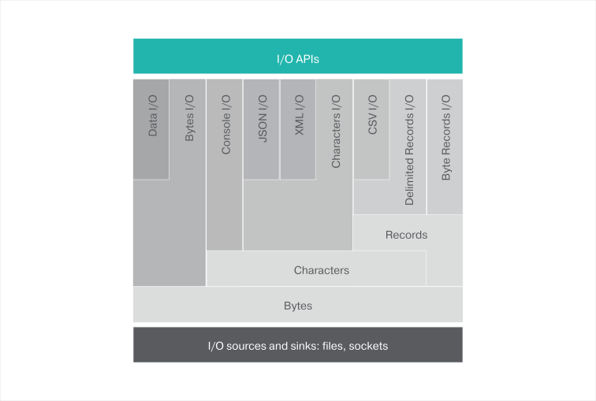

ballerina/io module
Module Overview
This module is designed to support input and output operations via channels in a canonical way, either in a blocking, or non-blocking manner.

Channels
A channel represents an I/O source or sink of some bytes, characters, or records that are opened for reading, or writing, respectively.
Byte channels
The most primitive channel is the ByteChannel which reads and writes 8-bit bytes.
// Open a file in read mode.
io:ReadableByteChannel readableByteChannel = io:openReadableFile("some/file.txt");
// Here is how 100 bytes are read from the channel.
(byte[], int)|error result = readableByteChannel.read(100);
// Open a file in write mode.
io:WritableByteChannel writableByteChannel = io:openWritableFile("some/file.txt");
// Write some content to the beginning of the file.
string someContent = "some content";
byte[] content = someContent.toByteArray("UTF-8");
int|error result = writableByteChannel.write(content, 0);
Character channels
The CharacterChannel is used to read and write characters. The charset encoding is specified when creating the
CharacterChannel.
// Create a `ReadableCharacterChannel` from the `ReadableByteChannel`.
var readableCharChannel = new io:ReadableCharacterChannel(readableByteChannel, "UTF-8");
If a ReadableCharacterChannel points to a JSON or XML source, it can be read and then written, directly into a variable of
the respective type.
// Reading a JSON.
json|error result = readableCharChannel.readJson();
// Reading an XML.
var result = readableCharChannel.readXml();
// Create a `WritableCharacterChannel` from the `WritableByteChannel`.
var writableCharChannel = new io:WritableCharacterChannel(writableByteChannel, "UTF-8");
// Writing a JSON.
json content = {fname:"Jhon", lname:"Doe", age:40};
var writeResult = writableCharChannel.writeJson(content);
if (writeResult is error) {
return writeResult;
} else {
io:println("JSON content written successfully.");
}
Record channels
Ballerina also supports I/O for delimited records.
// Creating a `ReadableTextRecordChannel` from the `ReadableCharacterChannel`.
// Records are separated using a new line, and
// fields of a record are separated using a comma.
var readableRecordsChannel = new io:ReadableTextRecordChannel(readableCharChannel, fs = ",", rs = "\n");
// Reading a few records.
while (readableRecordsChannel.hasNext()) {
var result = readableRecordsChannel.getNext();
if (result is string[]) {
println(record); // Retrieved a record.
} else {
return result; // An IO error occurred when reading the records.
}
}
A .CSV file can be read and written directly into a CSVChannel, as shown in this code snippet.
// Creating a `ReadableCSVChannel` from the `ReadableCharacterChannel`.
var readableCSVChannel = new io:ReadableCSVChannel(readableCharChannel);
Records of the .CSV file can read directly into a table of a matching type.
// First lets define a type that matches a record in the CSV file.
type Employee record {
string id;
string name;
float salary;
};
// Now read the CSV file as a table of Employees and compute total salary.
float total = 0.0;
var tableResult = csv.getTable(Employee);
if (tableResult is table<Employee>) {
foreach var x in tableResult {
total = total + x.salary;
}
return total;
} else if (tableResult is error) {
return tableResult; //Return the error back to the caller
} else {
error e = error(IO_ERROR_CODE, { message : "Record channel not initialized properly" });
return e;
}
Data Channels
Ballerina supports performing data i/o operations
Person object could be serialized into a file or a network socket in the following manner.
public type Person record {
string name;
int age;
float income;
boolean isMarried;
};
//Serialize record into binary
function serialize(Person p, io:WritableByteChannel byteChannel) {
io:WritableDataChannel dc = new io:WritableDataChannel(byteChannel);
var length = p.name.toByteArray("UTF-8").length();
var lengthResult = dc.writeInt32(length);
var nameResult = dc.writeString(p.name, "UTF-8");
var ageResult = dc.writeInt16(p.age);
var incomeResult = dc.writeFloat64(p.income);
var maritalStatusResult = dc.writeBool(p.isMarried);
var closeResult = dc.close();
}
//Deserialize record into binary
function deserialize(io:ReadableByteChannel byteChannel) returns Person {
Person person = {};
int nameLength = 0;
string nameValue;
io:ReadableDataChannel dc = new io:ReadableDataChannel(byteChannel);
//Read 32 bit singed integer
var int32Result = dc.readInt32();
if (int32Result is int) {
nameLength = int32Result;
} else if (int32Result is error) {
log:printError("Error occurred while reading name length", err = int32Result);
}
//Read UTF-8 encoded string represented through specified amount of bytes
var strResult = dc.readString(nameLength, "UTF-8");
if (strResult is string) {
person.name = strResult;
} else if (strResult is error) {
log:printError("Error occurred while reading name", err = strResult);
}
//Read 16 bit signed integer
var int16Result = dc.readInt16();
if (int16Result is int) {
person.age = int16Result;
} else if (int16Result is error) {
log:printError("Error occurred while reading age", err = int16Result);
}
//Read 64 bit signed float
var float64Result = dc.readFloat64();
if (float64Result is float) {
person.income = float64Result;
} else if (float64Result is error) {
log:printError("Error occurred while reading income", err = float64Result);
}
//Read boolean
var boolResult = dc.readBool();
if (boolResult is boolean) {
person.isMarried = boolResult;
} else if (boolResult is error) {
log:printError("Error occurred while reading marital status", err = boolResult);
}
//Finally close the data channel
var closeResult = dc.close();
return person;
}
Module Detail
Records
| Record | Description |
|---|---|
| IOError |
Objects
| Object | Description |
|---|---|
| ReadableByteChannel | ReadableByteChannel represents an input resource (i.e file, socket). which could be used to source bytes. |
| ReadableCSVChannel | Represents a ReadableCSVChannel which could be used to read records from CSV file. |
| ReadableCharacterChannel | Represents a channel which could be used to read characters through a given ReadableByteChannel. |
| ReadableDataChannel | Represents a data channel for reading data. |
| ReadableTextRecordChannel | Represents a channel which will allow to read |
| StringReader | Represents a reader which will wrap string content as a channel. |
| WritableByteChannel | WritableByteChannel represents an output resource (i.e file, socket). which could be used to sink bytes. |
| WritableCSVChannel | Represents a WritableCSVChannel which could be used to write records from CSV file. |
| WritableCharacterChannel | Represents a channel which could be used to write characters through a given WritableCharacterChannel. |
| WritableDataChannel | Represents a WritableDataChannel for writing data. |
| WritableTextRecordChannel | Represents a channel which will allow to write records through a given WritableCharacterChannel. |
Functions
| Function | Description |
|---|---|
| createReadableChannel | Creates an in-memory channel which will reference stream of bytes. |
| openReadableCsvFile | Retrieves a readable CSV channel from a give file path. |
| openReadableFile | Retrieves a ReadableByteChannel from a given file path. |
| openWritableCsvFile | Retrieves a writable CSV channel from a give file path. |
| openWritableFile | Retrieves a WritableByteChannel from a given file path. |
Prints |
|
| println | Prints |
| readln | Returns the input read from STDIN. |
| sprintf | Returns a formatted string using the specified format string and arguments. Following format specifiers are allowed. b boolean B boolean (ALL_CAPS) d int f float x hex X HEX (ALL_CAPS) s string (This specifier is applicable for any of the supported types in Ballerina. These values will be converted to their string representation.) |
Type Definitions
| Type | Values | Description |
|---|---|---|
| ByteOrder | LE | BE | Represents network byte order. BIG_ENDIAN - specifies the bytes to be in the order of most significant byte first LITTLE_ENDIAN - specifies the byte order to be the least significant byte first |
| Format | TDF | DEFAULT | CSV | Format which will be used to represent the CSV. DEFAULT - Would default to the format specified by CSVChannel. Presidence will be given to field separator and record separator. CSV - Field separator would be "," and the record separator would be new line. TDF - Field separator will be tab and record separator will be new line. |
| Mode | WRITE | RW | READ | APPEND | |
| Separator | TAB | COMMA | COLON | Field separators which are supported by DelimitedTextRecordChannel. |
public function createReadableChannel(byte[] content) returns (ReadableByteChannel)
Creates an in-memory channel which will reference stream of bytes.
| Parameter Name | Data Type | Default Value | Description |
|---|---|---|---|
| content | byte[] | Content which should be exposed as channel |
| Return Type | Description | ||
|---|---|---|---|
| ReadableByteChannel | ByteChannel represenation to read the memory content |
public function openReadableCsvFile(string path, ,| |: fieldSeparator, string charset, int skipHeaders) returns (ReadableCSVChannel)
Retrieves a readable CSV channel from a give file path.
| Parameter Name | Data Type | Default Value | Description |
|---|---|---|---|
| path | string | File path which describes the location of the CSV |
|
| fieldSeparator | ,| |: | , | CSV record seperator (i.e comma or tab) |
| charset | string | UTF-8 | Encoding characters in the file represents |
| skipHeaders | int | 0 | Number of headers which should be skipped |
| Return Type | Description | ||
|---|---|---|---|
| ReadableCSVChannel | ReadableCSVChannel which could be used to iterate through the CSV records |
public function openReadableFile(string path) returns (ReadableByteChannel)
Retrieves a ReadableByteChannel from a given file path.
| Parameter Name | Data Type | Default Value | Description |
|---|---|---|---|
| path | string | Relative/absolute path string to locate the file |
| Return Type | Description | ||
|---|---|---|---|
| ReadableByteChannel | ByteChannel representation of the file resource |
public function openWritableCsvFile(string path, ,| |: fieldSeparator, string charset, int skipHeaders) returns (WritableCSVChannel)
Retrieves a writable CSV channel from a give file path.
| Parameter Name | Data Type | Default Value | Description |
|---|---|---|---|
| path | string | File path which describes the location of the CSV |
|
| fieldSeparator | ,| |: | , | CSV record seperator (i.e comma or tab) |
| charset | string | UTF-8 | Encoding characters in the file represents |
| skipHeaders | int | 0 | Number of headers which should be skipped |
| Return Type | Description | ||
|---|---|---|---|
| WritableCSVChannel | WritableCSVChannel which could be used to write CSV records |
public function openWritableFile(string path, boolean append) returns (WritableByteChannel)
Retrieves a WritableByteChannel from a given file path.
| Parameter Name | Data Type | Default Value | Description |
|---|---|---|---|
| path | string | Relative/absolute path string to locate the file |
|
| append | boolean | false | Append to end of file. |
| Return Type | Description | ||
|---|---|---|---|
| WritableByteChannel | ByteChannel representation of the file resource |
public function print(any|error[] values)
Prints any or error value(s) to the STDOUT.
| Parameter Name | Data Type | Default Value | Description |
|---|---|---|---|
| values | any|error[] | The value(s) to be printed. |
public function println(any|error[] values)
Prints any or error value(s) to the STDOUT followed by a new line.
| Parameter Name | Data Type | Default Value | Description |
|---|---|---|---|
| values | any|error[] |
public function readln(any a) returns (string)
Returns the input read from STDIN.
| Parameter Name | Data Type | Default Value | Description |
|---|---|---|---|
| a | any | Any value to be printed |
| Return Type | Description | ||
|---|---|---|---|
| string | Input read from STDIN |
public function sprintf(string format, any[] args) returns (string)
Returns a formatted string using the specified format string and arguments. Following format specifiers are allowed. b boolean B boolean (ALL_CAPS) d int f float x hex X HEX (ALL_CAPS) s string (This specifier is applicable for any of the supported types in Ballerina. These values will be converted to their string representation.)
| Parameter Name | Data Type | Default Value | Description |
|---|---|---|---|
| format | string | A format string |
|
| args | any[] | Arguments referenced by the format specifiers in the format string. |
| Return Type | Description | ||
|---|---|---|---|
| string | Formatted string |
public type ReadableByteChannel object
ReadableByteChannel represents an input resource (i.e file, socket). which could be used to source bytes.
-
<ReadableByteChannel> read(int nBytes) returns ((byte[],int) | error<>)
Source bytes from a given input/output resource.
Number of bytes returned will be < 0 if the file reached its end.
This operation will be asynchronous, where the total number of required bytes might not be returned at a given time.
Parameter Name Data Type Default Value Description nBytes int Positive integer. Represents the number of bytes which should be read
Return Type Description (byte[],int) | error<> Content, the number of bytes read or an error
-
<ReadableByteChannel> base64Encode() returns (ReadableByteChannel | error<>)
Encodes a given ReadableByteChannel with Base64 encoding scheme.
Return Type Description ReadableByteChannel | error<> Return an encoded ReadableByteChannel or an error
-
<ReadableByteChannel> base64Decode() returns (ReadableByteChannel | error<>)
Decodes a given ReadableByteChannel with Base64 encoding scheme.
Return Type Description ReadableByteChannel | error<> Return a decoded ReadableByteChannel or an error
-
<ReadableByteChannel> close() returns (error?<>)
Closes a given ReadableByteChannel.
Return Type Description error?<> Will return () if there's no error
public type ReadableCSVChannel object
Represents a ReadableCSVChannel which could be used to read records from CSV file.
-
<ReadableCSVChannel> __init(io:ReadableCharacterChannel byteChannel, ,| |: fs, int nHeaders)
Constructs a CSV channel from a CharacterChannel to read/write CSV records.
Parameter Name Data Type Default Value Description byteChannel io:ReadableCharacterChannel ChracterChannel which will represent the content in the CSV
fs ,| |: , Field separator which will separate between the records in the CSV
nHeaders int 0 Number of headers which should be skipped prior to reading records
-
<ReadableCSVChannel> hasNext() returns (boolean)
Indicates whether there's another record which could be read.
Return Type Description boolean True if there's a record
-
<ReadableCSVChannel> getNext() returns (string[] | error?<>)
Gets the next record from the CSV file.
Return Type Description string[] | error?<> List of fields in the CSV or error
-
<ReadableCSVChannel> close() returns (error?<>)
Closes a given CSVChannel.
Return Type Description error?<> Returns if an error is encountered
-
<ReadableCSVChannel> getTable(typedesc structType) returns (table<$anonType$10> | error<>)
Returns a table which coresponds to the CSV records.
Parameter Name Data Type Default Value Description structType typedesc The object the CSV records should be deserialized
Return Type Description table<$anonType$10> | error<> Table which represents CSV records or error
public type ReadableCharacterChannel object
Represents a channel which could be used to read characters through a given ReadableByteChannel.
-
<ReadableCharacterChannel> __init(io:ReadableByteChannel byteChannel, string charset)
Constructs a ReadableCharacterChannel from a given ReadableByteChannel and Charset.
Parameter Name Data Type Default Value Description byteChannel io:ReadableByteChannel charset string Character-Set which would be used to encode/decode given bytes to characters
-
<ReadableCharacterChannel> read(int numberOfChars) returns (string | error<>)
Reads a given number of characters.
Parameter Name Data Type Default Value Description numberOfChars int Number of characters which should be read
Return Type Description string | error<> Content which is read or an error
-
<ReadableCharacterChannel> readJson() returns (json | error<>)
Reads a json from the given channel.
Return Type Description json | error<> Read json string or an error
-
<ReadableCharacterChannel> readXml() returns (xml | error<>)
Reads a XML from the given channel.
Return Type Description xml | error<> Read xml or an error
-
<ReadableCharacterChannel> close() returns (error?<>)
Closes a given character channel.
Return Type Description error?<> If an error occurred while writing
public type ReadableDataChannel object
Represents a data channel for reading data.
-
<ReadableDataChannel> __init(io:ReadableByteChannel byteChannel, BE|LE bOrder)
Parameter Name Data Type Default Value Description byteChannel io:ReadableByteChannel bOrder BE|LE BE -
<ReadableDataChannel> readInt16() returns (int | error<>)
Reads a 16 bit integer.
Return Type Description int | error<> value of the integer which is read or an error
-
<ReadableDataChannel> readInt32() returns (int | error<>)
Reads a 32 bit integer.
Return Type Description int | error<> value of the integer which is read or an error
-
<ReadableDataChannel> readInt64() returns (int | error<>)
Reads a 64 bit integer.
Return Type Description int | error<> value of the integer which is read or an error
-
<ReadableDataChannel> readFloat32() returns (float | error<>)
Reads 32 bit float.
Return Type Description float | error<> value of the float which is read or an error
-
<ReadableDataChannel> readFloat64() returns (float | error<>)
Reads 64 bit float.
Return Type Description float | error<> value of the float which is read or an error
-
<ReadableDataChannel> readBool() returns (boolean | error<>)
Reads 1 byte and convert it's value to boolean.
Return Type Description boolean | error<> boolean value which is read or an error
-
<ReadableDataChannel> readString(int nBytes, string encoding) returns (string | error<>)
Reads string value represented through the provided number of bytes.
Parameter Name Data Type Default Value Description nBytes int specifies the number of bytes which represents the string
encoding string specifies the char-set encoding of the string
Return Type Description string | error<> value of the string or an error
-
<ReadableDataChannel> readVarInt() returns (int | error<>)
Reads a variable length integer.
Return Type Description int | error<> value of the integer which is read or an error
-
<ReadableDataChannel> close() returns (error?<>)
Closes the data channel.
Return Type Description error?<> nill if the channel is closed successfully or an i/o error
public type ReadableTextRecordChannel object
Represents a channel which will allow to read
-
<ReadableTextRecordChannel> __init(io:ReadableCharacterChannel charChannel, string fs, string rs, string fmt)
Constructs a ReadableTextRecordChannel from a given ReadableCharacterChannel.
Parameter Name Data Type Default Value Description charChannel io:ReadableCharacterChannel CharacterChannel which will point to the input/output resource
fs string Field separator (this could be a regex)
rs string Record separator (this could be a regex)
fmt string default -
<ReadableTextRecordChannel> hasNext() returns (boolean)
Checks whether there's a record left to be read.
Return Type Description boolean True if there's a record left to be read
-
<ReadableTextRecordChannel> getNext() returns (string[] | error<>)
Get next record from the input/output resource.
Return Type Description string[] | error<> Set of fields included in the record or an error
-
<ReadableTextRecordChannel> close() returns (error?<>)
Closes a given record channel.
Return Type Description error?<> An error if the record channel could not be closed properly
public type StringReader object
Represents a reader which will wrap string content as a channel.
-
<StringReader> __init(string content, string encoding)
Constructs a channel to read string.
Parameter Name Data Type Default Value Description content string content which should be written
encoding string UTF-8 encoding of the characters of the content
-
<StringReader> readJson() returns (json | error<>)
Reads string as json from reader.
Return Type Description json | error<> json or an error
-
<StringReader> readXml() returns (xml | error?<>)
Reads string as XML from reader
Return Type Description xml | error?<> -
<StringReader> readChar(int nCharacters) returns (string | error?<>)
Reads characters from the given string.
Parameter Name Data Type Default Value Description nCharacters int read specifc number of characters
Return Type Description string | error?<> string or an error
-
<StringReader> close() returns (error?<>)
Closes reader.
Return Type Description error?<> An error if could not close the channel.
public type WritableByteChannel object
WritableByteChannel represents an output resource (i.e file, socket). which could be used to sink bytes.
-
<WritableByteChannel> write(byte[] content, int offset) returns (int | error<>)
Sink bytes from a given input/output resource.
This operation will be asynchronous, write might return without writing all the content.
Parameter Name Data Type Default Value Description content byte[] Block of bytes which should be written
offset int Return Type Description int | error<> Offset which should be kept when writing bytes. Number of bytes written or an error.
-
<WritableByteChannel> close() returns (error?<>)
Closes a given byte channel.
Return Type Description error?<> Will return () if there's no error
public type WritableCSVChannel object
Represents a WritableCSVChannel which could be used to write records from CSV file.
-
<WritableCSVChannel> __init(io:WritableCharacterChannel characterChannel, ,| |: fs)
Constructs a CSV channel from a CharacterChannel to read/write CSV records.
Parameter Name Data Type Default Value Description characterChannel io:WritableCharacterChannel fs ,| |: , Field separator which will separate between the records in the CSV
-
<WritableCSVChannel> write(string[] csvRecord) returns (error?<>)
Writes record to a given CSV file.
Parameter Name Data Type Default Value Description csvRecord string[] A record to be written to the channel
Return Type Description error?<> Returns an error if the record could not be written properly
-
<WritableCSVChannel> close() returns (error?<>)
Closes a given CSVChannel.
Return Type Description error?<> if an error is encountered
public type WritableCharacterChannel object
Represents a channel which could be used to write characters through a given WritableCharacterChannel.
-
<WritableCharacterChannel> __init(io:WritableByteChannel bChannel, string charset)
Constructs a WritableByteChannel from a given WritableByteChannel and Charset.
Parameter Name Data Type Default Value Description bChannel io:WritableByteChannel WritableByteChannel which would be used to write characters
charset string Character-Set which would be used to encode given bytes to characters
-
<WritableCharacterChannel> write(string content, int startOffset) returns (int | error<>)
Writes a given sequence of characters (string).
Parameter Name Data Type Default Value Description content string Content which should be written
startOffset int Number of characters which should be offset when writing content
Return Type Description int | error<> Content length that written or an error.
-
<WritableCharacterChannel> writeJson(json content) returns (error?<>)
Writes a given json to the given channel.
Parameter Name Data Type Default Value Description content json The json which should be written
Return Type Description error?<> If an error occurred while writing
-
<WritableCharacterChannel> writeXml(xml content) returns (error?<>)
Writes a given xml to the channel.
Parameter Name Data Type Default Value Description content xml The XML which should be written
Return Type Description error?<> If an error occurred while writing
-
<WritableCharacterChannel> close() returns (error?<>)
Closes a given WritableCharacterChannel channel.
Return Type Description error?<> If an error occurred while writing
public type WritableDataChannel object
Represents a WritableDataChannel for writing data.
-
<WritableDataChannel> __init(io:WritableByteChannel byteChannel, BE|LE bOrder)
Parameter Name Data Type Default Value Description byteChannel io:WritableByteChannel bOrder BE|LE BE -
<WritableDataChannel> writeInt16(int value) returns (error?<>)
Writes 16 bit integer.
Parameter Name Data Type Default Value Description value int integer which will be written
Return Type Description error?<> nill if the content is written successfully or an error
-
<WritableDataChannel> writeInt32(int value) returns (error?<>)
Writes 32 bit integer.
Parameter Name Data Type Default Value Description value int integer which will be written
Return Type Description error?<> nill if the content is written successfully or an error
-
<WritableDataChannel> writeInt64(int value) returns (error?<>)
Writes 64 bit integer.
Parameter Name Data Type Default Value Description value int integer which will be written
Return Type Description error?<> nill if the content is written successfully or an error
-
<WritableDataChannel> writeFloat32(float value) returns (error?<>)
Writes 32 bit float.
Parameter Name Data Type Default Value Description value float float which will be written
Return Type Description error?<> nill if the float is written successfully or an error
-
<WritableDataChannel> writeFloat64(float value) returns (error?<>)
Writes 64 bit float.
Parameter Name Data Type Default Value Description value float float which will be written
Return Type Description error?<> nill if the float is written successfully or an error
-
<WritableDataChannel> writeBool(boolean value) returns (error?<>)
Writes boolean.
Parameter Name Data Type Default Value Description value boolean boolean which will be written
Return Type Description error?<> nill if the content is written successfully or an error
-
<WritableDataChannel> writeString(string value, string encoding) returns (error?<>)
Writes a given string value to the respective channel.
Parameter Name Data Type Default Value Description value string the value which should be written
encoding string the encoding which will represent the value string
Return Type Description error?<> nill if the content is written successfully or an error
-
<WritableDataChannel> writeVarInt(int value) returns (error?<>)
Reads a variable length integer.
Parameter Name Data Type Default Value Description value int Return Type Description error?<> value of the integer which is read or an error
-
<WritableDataChannel> close() returns (error?<>)
Closes the data channel.
Return Type Description error?<> nill if the channel is closed successfully or an i/o error
public type WritableTextRecordChannel object
Represents a channel which will allow to write records through a given WritableCharacterChannel.
-
<WritableTextRecordChannel> __init(io:WritableCharacterChannel characterChannel, string fs, string rs, string fmt)
Constructs a DelimitedTextRecordChannel from a given WritableCharacterChannel.
Parameter Name Data Type Default Value Description characterChannel io:WritableCharacterChannel fs string Field separator (this could be a regex)
rs string Record separator (this could be a regex)
fmt string default -
<WritableTextRecordChannel> write(string[] textRecord) returns (error?<>)
Writes records to a given output resource.
Parameter Name Data Type Default Value Description textRecord string[] List of fields to be written
Return Type Description error?<> An error if the records could not be written properly
-
<WritableTextRecordChannel> close() returns (error?<>)
Closes a given record channel.
Return Type Description error?<> An error if the record channel could not be closed properly